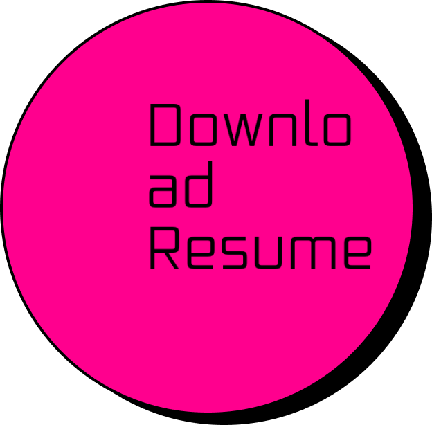

- About
- Projects
- Contact

I'M
LEX
UX/ UI Designer
My real name is Alexa (not THAT Alexa). Something you might find fascinating is that I am a hybrid strength athlete. I constantly find new ways to push my body to the limits, recover, and take care of my health and then repeat almost every day. The chance to suffer for improvement is why I choose this. This year I am attempting to break a few Drug Tested World records in Powerlifting.
I don’t have the same story a lot of creatives have of crafting since before they could speak. I am quite the opposite. Sports and being active was what I brought up on. It wasn’t until I was a bit older before I realized that I was more than left-brained, I was both! As a teenager, I would spend hours coding and manipulating my MySpace page to make it unrecognizable. This turned into my friends recruiting me to do the same to theirs. To be more productive with my eye for design, I joined my high school’s yearbook staff where I learned design theory such as hierarchy, color, and typography.
Post high school graduation, I was on my way to the University of Hawaii as an official Rainbow Warrior. I chose to pursue Communication because I knew my goal was to help people but I wasn’t sure in what capacity. This degree has allowed me to learn human behavior, interaction, and communication. When I figured out how I wanted to invoke change and help others, I would be successful in communicating my message.
After college, I got to refine my eye for design. I used photography as a vessel to communicate people's uplifting stories of tribulations and hope with an idea called CC: Humanity. Next, I became an official photographer and graphic designer for a strength training company called Mark Bell Sling Shot. After spending a decade in the restaurant industry as a server and stepping into design and communication, I know my foundation is perfect for understanding the way humans think and navigate daily life. I now create frictionless experiences on the web. Quitting my photography, social media and hospitality positions was a leap of faith. UX/UI is a full circle that started with web coding for fun!
